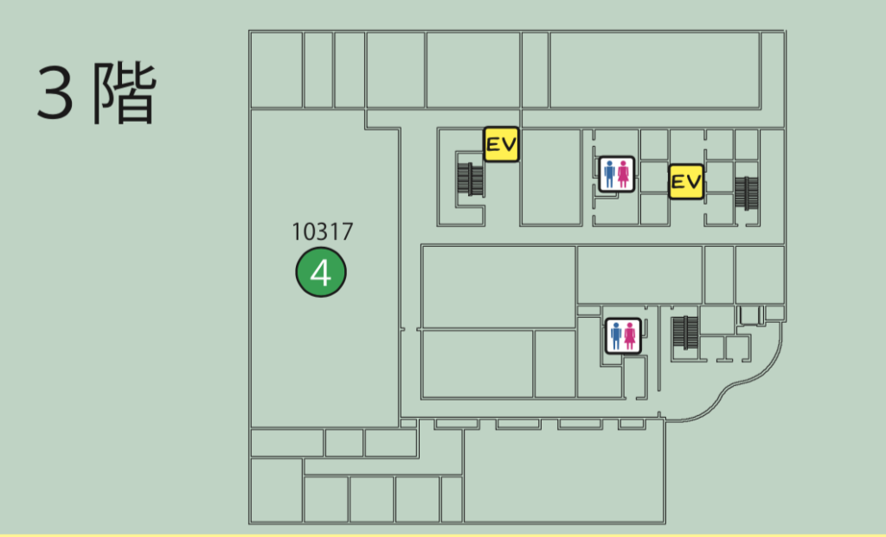

{kind=link}
1号館
{kind=link}
①自治会執行委員会
訂正:10204→10205
②アミューズメント研究会／二部テーブルゲーム研究部
③メディア研究会
{kind=link}

④情報駆動知能化研究室／情報駆動制御研究室
訂正:10317→10424
{kind=link}
④情報駆動知能化研究室／情報駆動制御研究室
⑤情報セキュリティ研究室／アクセシブルテクノロジー研究室／先端情報システム研究室／知能計算システム研究室／計算言語学研究室／実空間コンピューティング研究室／Web工学研究室、知的メディア研究グループ
⑥メディア応用研究室
⑦情報化制御研究室
⑧電子制御システム研究室
{kind=link}
⑨音メディア表現研究室
⑩ビジュアルコンピューティング研究室／インタラクティブグラフィックス研究室
11、メディア応用研究室
12、情報通信デバイス研究室
13、音響信号処理研究室
{kind=link}
{kind=link}
15、メカトロ機械設計研究室
16、医用精密工学研究室
17、先端医療福祉工学研究室
18、光応用機械工学研究室
{kind=link}
19、人間機械系研究室
20、バイオロボティクス研究室
21、信号処理とモデリング研究室
22、ロボティクス研究室
23、コンピュータネットワーク研究室
24、ソフトメカニクス研究室
25、知能機械システム研究室
{kind=link}
26、暗号方式・暗号プロトコル研究室
27、光応用研究室
28、人工知能研究室
29、データ工学研究室
30、画像処理研究室
31、通信システム研究室
{kind=link}
32、電子情報システム工学研究室
33、並列処理・可視化応用研究室
{kind=link}

34、ネットワークロボティクス研究室
35、ネットワークシステム研究室
2号館
{kind=link}
{kind=link}
⭐︎チャーリー受付
⭐︎経営同友会
⭐︎大学進学説明会 会場
{kind=link}
{kind=link}

⑧アマチュア無線部／二部アマチュア無線部
⑨オーディオ技術研究部
⑩鉄道研究部
11、エネルギー研究部／ソフトウェア研究部
12、電子技術研究部
13、漫画研究会
14、コーストジャズオーケストラ
15、新聞委員会／二部オーディオ部
16、二部ソフトウェア研究部／二部漫画研究会
17、写真部／二部写真部
{kind=link}
18、ダンス部
19、ギターアンサンブル部
20、モダンジャズ研究会
21、軽音楽部
22、二部ＦＬＡＭＥ部
23、フォークミュージックアソシエイション
{kind=link}
3号館
{kind=link}
{kind=link}
24、旭祭実行委員会（子供の広場）
24、日本大学松戸歯学部
{kind=link}
4号館
{kind=link}
{kind=link}
{kind=link}
37、EH科ワークショップ室
38、集積情報システム研究室／集積回路研究室／光システム研究室／電子デバイス研究室／協調ロボティクス研究室／電子デバイス応用研究室／電子・光機能材料研究室
{kind=link}

39、電気電子工学実験室／電気電子工学基礎実験室
{kind=link}
{kind=link}
5号館
{kind=link}
{kind=link}
27、将棋部／サイクリング部
28、旭祭実行委員会（大脱獄）
29、マジックサークル
{kind=link}
{kind=link}
32、お笑い同好会
33、競技麻雀部
34、VOCALOID 同好会
35、四工大プロジェクト
36、吹奏楽部
{kind=link}
41、医療福祉研究室
42、デザイン工学科 学科展示
43、オーサリング研究室
{kind=link}
{kind=link}
キャンパスプラザ
①剣道部 たません
②軽音楽部 鶏の唐揚げ
③ニ部旭祭実行委員会 たいやき、ドリンク
④一部旭祭実行委員会 もつ煮
☆松戸祭コラボ タピオカドリンク
⑤電大ガールズ 揚げドーナツ
⑥卓球部 揚げたこ焼き
⑦一部自治会執行委員会 チョコバナナ
⑧生協学生委員会 じゃがバター
⑨コンピュータネットワーク研究室 トマトスープ
⑩ニ部自治会執行委員会 焼きそば・ドリンク
⑪バドミントン部 チュロス
⑫水泳部 たこ焼き
⑬籠球部 タピオカジュース
⑭空手道部 焼き鳥
⑮サイクリング部 お好み焼き
⑯ボランティアサークル“らいふ” ワッフル
⑰合気道部 チータマべー・揚げバスタ
⑱少林寺拳法部 わらび餅・ドリンク
⑲留学生会 各国の料理
{kind=link}